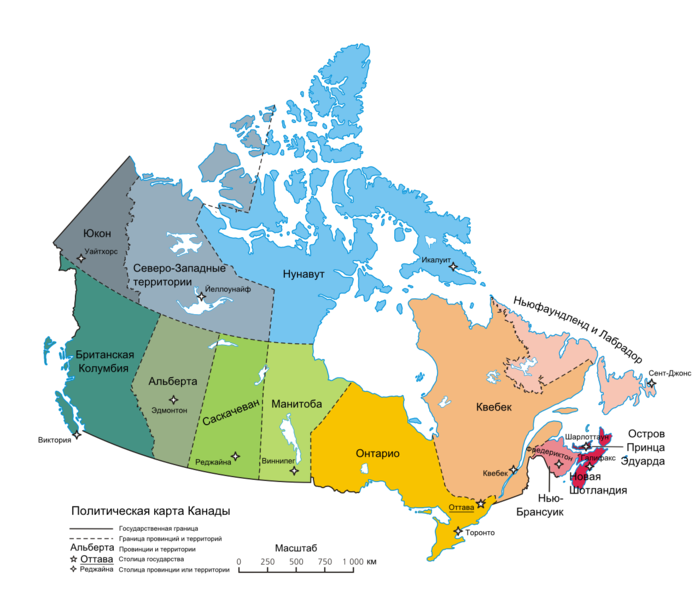

Природа и климат
Канада занимает бо́льшую часть Севера Северной Америки. 75 % процентов территории — зона севера. Канада имеет общую сухопутную границу с США на юге и на северо-западе (между Аляской и Юконом) и протянута от Атлантического океана на востоке до Тихого — на западе и Северного Ледовитого — на севере. Она также имеет морскую границу с Францией (Сен-Пьер и Микелон) и Данией (Гренландия). С 1925 Канада владеет частью Арктики между 60˚ з. д. и 141˚ з. д., однако, эти владения не являются общепризнанными. Самое северное поселение в Канаде и в мире находится в Алерте (Нунавут), базе Канадских вооружённых сил на северной оконечности острова Элсмир (82,5˚ с. ш. в 834 км — 450 морских милях — от Северного полюса). Канада — вторая из крупнейших стран мира. Плотность населения (около 3,5 человек на 1 км²) является одной из самых низких в мире. Наиболее населённая область страны — это коридор Квебек-Виндзор вдоль равнинных берегов реки Св. Лаврентия и на юго-востоке Великих озёр. К северу от этой области находится обширный Канадский щит, скальный регион, очищенный последним ледниковым периодом, лишённый плодородных земель, богатый минералами, озёрами и реками. В Канаде больше озёр, чем в любой другой стране мира, она обладает значительным запасом пресной воды. Шарлоттаун (Остров Принца Эдуарда) зимой На востоке Канады река Св. Лаврентия впадает в залив Св. Лаврентия, имея крупнейшее устье в мире, где находится остров Ньюфаундленд, а остров Принца Эдуарда находится к югу от него. Нью-Брансуик и Новая Шотландия разделены заливом Фанди, который знаменит самыми высокими приливами в мире. Эти 4 приморские провинции находятся к востоку от Квебека. Онтарио и Гудзонов залив расположены в центре Канады, тогда как от Манитобы на запад через Саскачеван и Альберту раскинуты обширные равнины канадских прерий вплоть до Скалистых гор, которые отделяют их от Британской Колумбии. Водопад Ниагара в Онтарио. К северу от 60-й параллели расположены 3 канадских территории — Нунавут, Северо-Западные территории и Юкон, — усыпанные многочисленными озёрами (самые крупные из которых Большое Медвежье и Большое Невольничье озёра) и пересечённые самой длинной рекой в стране — рекой Маккензи. К тому же, континентальные земли Канадского Севера с севера граничат с большим архипелагом, канадским арктическим архипелагом, включающим в себя крупнейшие острова мира. Проливы между этими островами представляют собой Северо-западный проход из Лабрадорского моря в море Бофорта минуя Баффинов залив. Кроме того в этом регионе, покрытом полярными льдами, между островами Королевы Елизаветы находится северный магнитный полюс. Белый медведь, северная Манитоба Растительность меняется от лиственных лесов на юге Онтарио до смешанных и лаврентийских лесов и к северу постепенно уменьшается от тайги — северных лесов, или хвойного пояса — к тундре и далее к арктическим пустыням Севера. Полярные острова находятся в зоне, поверхность которой покрыта снегами и ледниками, не тающими даже коротким летом. Баффинова земля и другие острова у северного побережья Канады покрыты тундрой, которая занимает и всю северную материковую часть Канады, проникая далеко к югу вдоль западного побережья Гудзонова залива и на полуострове Лабрадор. Здесь растут вересковые, осоки, кустарниковые береза и ива. К югу от тундры между Тихим и Атлантическим океанами раскинулась широкая полоса лесов. Преобладают хвойные леса; главные породы — чёрная ель на востоке и белая ель на западе (в долине р. Макензи), сосна, лиственница, туя и др. Менее распространенные лиственные леса состоят из тополя, ольхи, березы и ивы. Особенно разнообразны леса в районе Великих озёр (американский вяз, веймутова сосна, канадская тсуга, дуб, каштан, бук). На тихоокеанском побережье распространены хвойные леса из дугласовой и ситхинской ели, аляскинского и красного кедра); около Ванкувера встречаются земляничное дерево и орегонский дуб. В приморских приатлантических провинциях — акадские леса с бальзамической пихтой, чёрной и красной елью; также кедр, американская лиственница, жёлтая береза, бук. В зоне тундр водятся северный олень, полярный заяц, лемминг, песец и оригинальный мускусный овцебык. Южнее животный мир более разнообразен — лесной олень карибу, благородный олень вапити, лось, в горных районах — баран толсторог и снежная коза. Довольно многочисленны грызуны: канадская белка чикари, бурундук, американская летяга, бобр, прыгунчик из семейства тушканчиков, ондатра, дикобраз — иглошерст, луговой и американский заяц, пищуха. Из кошачьих хищников для Канады — канадская рысь и пума. Водятся волки, лисицы, серый медведь — гризли, енот-полоскун. Из куньих — соболь, пекан, выдра, росомаха и др. Много гнездящихся перелетных птиц и промысловой птицы. Фауна пресмыкающихся и земноводных небогата. В пресноводных водоемах много рыбы. Что касается рельефа, то основную часть страны занимают равнины прерий и плато Канадского щита. К западу от прерий располагаются континентальные низменности Британской Колумбии и Скалистые горы, а Аппалачи возвышаются от юга от Квебека до приморских провинций. Средние температуры января и июля различаются для каждой области. Зима может быть очень суровой в некоторых регионах страны, среднемесячные температуры могут достигать 15˚С ниже нуля в южной части страны, а иногда и −45˚С с сильными ледяными ветрами. Минимальная температура, когда-либо наблюдавшаяся в Канаде, составляет −63˚С (на Юконе). Ежегодно уровень снежного покрова может достигать нескольких сотен сантиметров (например, в Квебеке в среднем 337 см). Побережье Британской Колумбии, особенно остров Ванкувер, представляет собой исключение и обладает умеренным климатом с мягкими и дождливыми зимами. Летние температуры могут достигать 35˚С, даже 40˚С, учитывая индекс влажности.
Средняя температура воздуха (°C):
| Янв | Фев | Мар | Апр | Май | Июн | Июл | Авг | Сен | Окт | Ноя | Дек | |
|---|---|---|---|---|---|---|---|---|---|---|---|---|
| Оттава | -11 | -10 | -3 | +5 | +13 | +18 | +21 | +19 | +15 | +8 | +1 | -8 |
| Торонто | -5 | -5 | -1 | +6 | +12 | +18 | +21 | +20 | +16 | +9 | +3 | -2 |
| Монреаль | -10 | -8 | -2 | +6 | +14 | +19 | +21 | +20 | +15 | +9 | +2 | -6 |
| Ванкувер | +3 | +4 | +6 | +9 | +12 | +15 | +17 | +17 | +14 | +10 | +6 | +4 |
Административное деление:
10 провинций и 3 территории
 Провинции:
- Британская Колумбия
- Альберта
- Саскачеван
- Манитоба
- Онтарио
- Квебек
- Нью-Брансуик
- Остров Принца Эдуарда
- Новая Шотландия
- Ньюфаундленд и Лабрадор
- Юкон
- Северо-Западные территории
- Нунавут